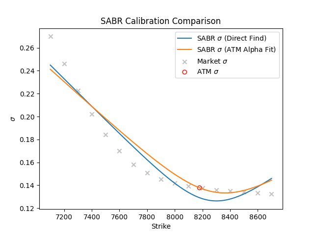
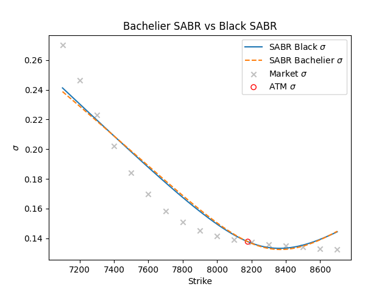

Commodity Option Volatility Surface using SABR#
2-D Input Data#
The l2309 option data, recorded on the 26th July, 2023, is utilized for data inputs. The corresponding close price for l2309 future is 8179.0. The implied volatility of this dataset was computed using the Black-Scholes model, incorporating a calendar-day basis for calculation.
The graphical representation of the input-implied volatility is delineated in the subsequent illustration:
[1]:
import pandas as pd
pd.read_csv("../sample_iv_data.csv")
[1]:
| strikes | ivs | |
|---|---|---|
| 0 | 7100 | 0.269966 |
| 1 | 7200 | 0.246217 |
| 2 | 7300 | 0.222838 |
| 3 | 7400 | 0.202008 |
| 4 | 7500 | 0.184172 |
| 5 | 7600 | 0.169899 |
| 6 | 7700 | 0.158302 |
| 7 | 7800 | 0.150774 |
| 8 | 7900 | 0.145299 |
| 9 | 8000 | 0.141661 |
| 10 | 8100 | 0.139141 |
| 11 | 8200 | 0.137403 |
| 12 | 8300 | 0.135947 |
| 13 | 8400 | 0.134929 |
| 14 | 8500 | 0.133980 |
| 15 | 8600 | 0.133102 |
| 16 | 8700 | 0.132350 |
Interpolate ATM vol#

SABR Model#
The SABR model both have the black calibration space and the normal calibration space where beta = 0, 1 respectively. When beta = 1/2, we have CIR calibration space. There are two calibration methods included in our implementation.
The beta value is fixed for the below method：
optimize the sabr function directly with the non-linear least square method. To simplify, find the \(\alpha\), \(\beta\), \(\rho\) at one time.
The alpha value is implied from the atm volatility (West, 2005a), and the residuals can be formed as an objective function to find the local minimum value.
The calibrated parameters should be compared and the corresponding results should be plotted. After the theoretical part is done, finish the implied volatility part using the normal and lognormal SABR model.
SABR – Fit Market#
Bachelier SABR vs Black SABR#
This section compares the normal SABR stochastic volatility model using alpha fit method. The fitted volatility is volatility from Normal SABR model.

3D surface#
Black SABR Volatility Surface#

Bachelier SABR Volatility Surface#